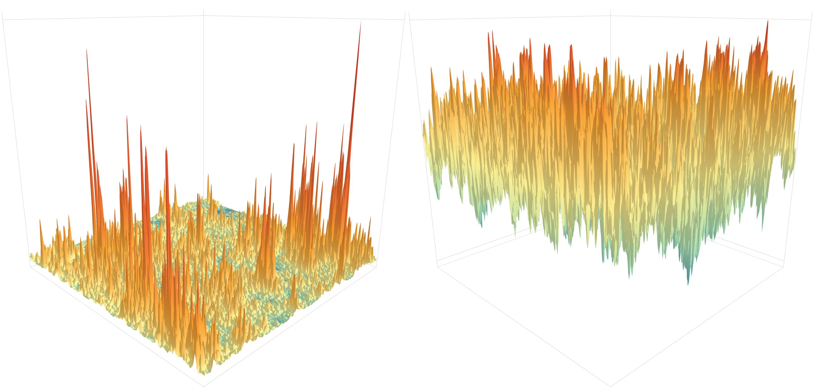
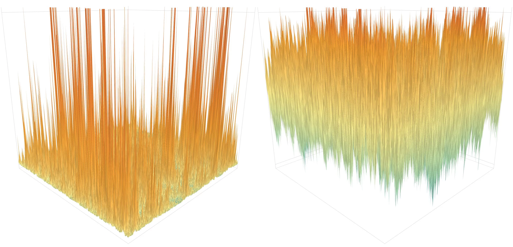

The critical 2D Stochastic Heat Flow and KPZ process
Numerical simulations of critical 2D Stochastic Heat Flow (SHF, left) and KPZ process (right). See our paper The Critical 2D KPZ Process for more details.


The animation zooms into the center and then zooms out to the initial view. The initial view represents the even-parity lattice inside the diamond with vertices (±1032, 0) and (0, ±1032). Click to enlarge.
Still images: with or without frame. Other samples: one, two, three.


The SHF simulation (left) shows the point-to-plane partition functions of 2D directed polymers as a function of the starting point, locally smoothed in space (averaging over 7×7 lattice points). The polymer length is N = 50 000, the disorder strength is tuned in the critical window (θ = 0). After time reversal, partition functions solve a discretized stochastic heat equation with constant initial data, providing an approximation of the SHF at a positive time.
The KPZ simulation (right) shows the logarithm of the same point-to-plane partition functions, suitably centered (subtracting its spatial average) and locally smoothed in space (averaging over 7×7 lattice points). After time reversal, log partition functions provide discretized solutions of the KPZ equation with zero initial data, via the Cole–Hopf transform. Upon centering, which acts as the required renormalization, they approximate the critical 2D KPZ process.
SHF and the KPZ process are random distributions (generalized functions) on the plane. The simulations above provide graphical representations as functions, after local spatial smoothing. The chosen averaging scale (7×7 lattice points) is a tradeoff between smoothing local peaks while retaining enough fine details. A better sense of such distributions is obtained by varying the size of the averaging scale, as shown in the animation below.


The same sample as above, with fixed zoom, is shown at different spatial averaging scales, ranging from 1×1 to 20×20 lattice points (back and forth). The vertical scale is fixed across the animation. Click to enlarge.
Other samples: one, two, three.